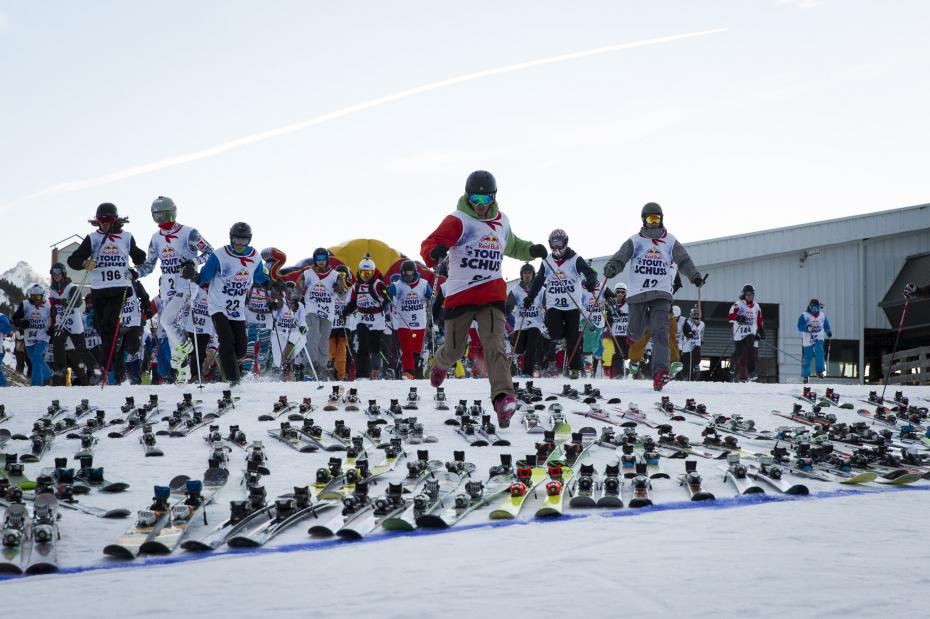

-
Présentation et contacts
Des anim's sur piste
SKZ c'est avant tout de la glisse ! Alors pour rendre l'aventure encore plus folle, la team t'as préparée des anim's sur les pistes. Que tu sois débutant ou pro-rider, tu trouveras forcément ton bonheur !
Attention : le port du casque est obligatoire sur toutes les compet', si tu as le tien ne l'oublie pas !
Contacts
Si tu as besoins de plus d'infos n'hésites pas à contaxcter les anim's pistes par mail : skz-pistes@gadz.org
Pisteusement,
Diommyliel, Spoutnik, Maréchal, Sorlad'ssInitiation
Tu n'as jamais tâté la poudreuse ? Tu es impatient de dévaler les pentes ? Les cours d'initiation sont là pour ça !Au programme :
De la glisse, des chutes et de la glisse ! Tu pourras apprendre aussi bien le ski que le snowboard, si tu ne sais pas quel support choisir avant de prendre tes options de location n'hésite pas à contacter un des Zidents anim'sss pistes pour des conseils avisés. Tu pourras ainsi rapidement tracer par tes propres moyens ou encore t'améliorer si tu n'en es pas à tes premiers essais. Pour participer, viens aux initiations les dimanche et lundi pour devenir un pro du ski et/ou du snowboard !
N'oublie pas de t'inscrire pour les cours lors de ton inscription à SKZ, sinon tu ne pourras pas y participer.
Attention places limitées : seuls les premiers inscrits pourront participer !SlalomLe principe :
Après la reconnaissance du terrain et une qualification chronométrée, tu vas pouvoir t'élancer dans un duel sans pitié sur un parcours tracé spécialement pour vous. L'épreuve se terminera par des finales impressionnantes opposant les meilleurs slalomeurs des TBK ! Et en plus, cette année, le slalom est géant, prépare toi à prendre de la vitesse !
Les catégories
Ski hommes, Ski femmes, Snowboard hommes, Snowboard femmes
Les 3 premiers de chaque catégorie seront récompensés !
Pendant cette anim's il sera peut être prossible de passer t'as flèche ! (information à confirmer)
Attention : seulement 200 places disponibles pour cette animation !Boarder crossPrincipe de la course :
Départ de front, virages relevés, bosses… tous les coups sont permis… ou presque ! Seuls les premiers seront qualifiés à chaque manche… pour espérer participer à la FINALE tant convoitée ! Va y avoir du sport !
1 manche qualificative individuelle chronométrée pour former un tableau final juste,
Passage à plusieurs sur un même tracé,
Les premiers sont qualifiés pour la manche suivante.
Seuls les 3 premiers seront récompensés !
Le port d'une dorsale est fortement conseillé pour cette épreuve!
Catégories :
Ski Hommes, Ski Femmes, Snowboard Hommes, Snowboard FemmesDerby
Comme une envie de poser le cerveau ? Le derby est alors fait pour toi!Au programme :
Les règles sont simples, on se met en haut d’une piste, on pose les skis ou les snow en ligne et on recule tous de 10 mètres! Au top, tu cours, tu chausses ta/tes planche(s) et ça part! Le premier arrivé en bas gagne le derby, un prix bien badass, la gloire, la fortune, les fu…. euh enfin voilà quoi ;) On te laisse imaginer ce que ça donne à 300...BarbecueUne petite faim ?
La team a prévu d'emmener un barbecue sur les pistes, histoire de te faire un petit casse dalle bien chaud dans le froid de la montagne !
Des grosses saucisses pour tous ! C'est un rassemblement de PGs au calme sur les pistes pour se reposer et manger tous ensemble tranquillement ! Un évènement à ne pas rater !RallyPars à la découverte du domaine de Saint Sorlin d'Arves en participant au Rallye avec tes chticop'sss
Muni d'un plan des pistes, rends toi en équipe aux quatre coins de la stations pour réaliser de nombreux défis.
N de paill'sss et un super moment entre chticop'sss à ne pas rater !
Et en plus, pour les meilleures équipes et les plus motivés, de nombreux lots sont à gagner !BiathlonDécouvre ce sport mythique qui a fait briller la France tant de fois aux JOs d'hiver
Equipé d'une carabine laser et de raquettes, tu pourras t'initier aux biathlon et découvrir que tirer sur une cible après un effort n'est pas si facile que ça !HandiskiJamais tu n'auras ressenti de telles sensations !
Tu as déjà vu des handicapé moteur faire du ski ? Tu t'es toujours demandé comment ils faisaient et ce qu'ils ressentaient ?
Viens le découvrir par toi même avec cette anim's que tu n'es pas prêt d'oublier ;)Descente aux flambeauxAllumez le feu !
Rejoins des centaines de PGs pour illuminer la piste lors d'une descente aux flambeaux mémorable.